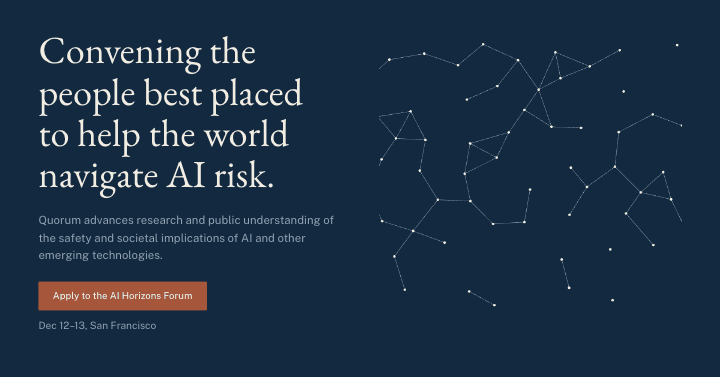
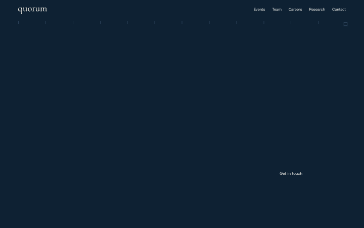
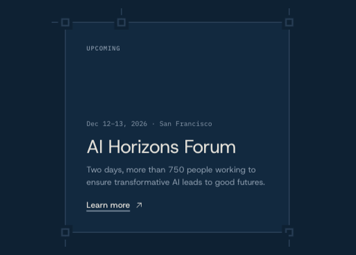
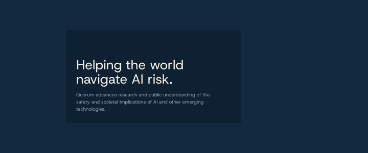
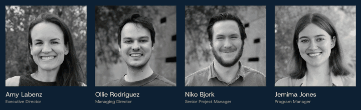

Quorum website: two options
Nov 3, 2026 · Ignacio
TL;DR
You asked how to make quorumai.org look more professional and exciting while keeping its structure and design direction.
There are two ways to do that:
- refine what you have.
- explore a few directions until one clicks.
Options
| What it is | Time | Estimate | |
|---|---|---|---|
| Option #1 · Refine | Keep your palette, type and structure, and make it more harmonious, professional and exciting where it counts | About 2 weeks | 20-40 h · USD 1,000-2,000 + taxes |
| Option #2 · Explore | Try a few directions as live sketches until one clicks, then build that one | About 4 weeks | 40-60 h · USD 2,000-3,000 + taxes |
30-minute call to decide.
The best next step is a 30-minute call.
Send me your Calendly or a couple of times that work, and I'll join.
What I'd change
- The hero, so it leads with what Quorum does and (maybe) the next event, with one clear button to apply (if you're also looking for more conversions; I'd leave it out if the site is meant to be purely informational).
- The events, so each one shows its key facts without a hover, plus a simple way to show the ones that already happened. (designing nice ways to show the data and images, so the events look professional but also alive!)
- Type and spacing, for a clearer hierarchy in your current fonts.
- One signature graphic, points that connect into a quorum, in place of the ring. (kinda like the cubes we did for Kairos, which they now use everywhere).
- Better ways of showing the info that's getting lost right now, like the events, the research and careers, without diluting Quorum's main message for the reader.
What I need to know first
- What "the same overall structure and design direction" means for you: which parts are fixed (sections, palette, type, logo) and which are open.
- Who the site is mainly for: people applying to events, partners and funders, or researchers.
- What content you have: event photos, attendee numbers, quotes, logos of organisations that attended, or what content you'll have in the future (videos, images, research done at the events, etc.).
Your answers decide between Option #1 and Option #2, or a mix of both.
Option #1 · Refine
Keep what works and make it sharper: the same palette, type and order of sections, with more space and fewer elements doing more. About 2 weeks, 20-40 hours · USD 1,000-2,000.

This is a rough 15-minute sketch to show the idea, not the final build: natochi.cv/quorum6.
Option #2 · Explore
Treat the hero and the visual language as open. I build two or three directions as live sketches, we compare them on a call, and the one that clicks becomes the site.
About 4 weeks, 40-60 hours (USD 2,000-3,000).
Here's what the process looks like. [This is not a proposal until we have the call knowing what direction you guys want!]
I sketch many ideas based on your references and on what the site needs to convey, so you see several different directions. Once we pick the most interesting one, I take the rest of the site through the same process and polish it. Here are a few of the directions I've already sketched:
| Sketch | What it shows |
|---|---|
| natochi.cv/quorum | Bento boxes, gradient horizons on hover, and blocks of information laid out almost like a blueprint map. It's packed with information, so look at it for the visual language, not the content. |
| natochi.cv/quorum2 | A bolder take, where every block is connected into one map. |
| natochi.cv/quorum3 | A calmer direction. The information is still too close together, but it shows how that orientation would feel. |
| natochi.cv/quorum5 | More air than quorum3 and more of the line effect, though it still reads fairly flat. |
| natochi.cv/quorum6 | The closest to your current site. It still needs work on how the information is presented. |

The map builds itself as the page loads: the lines draw down, each corner node turns in, and each block fills once its frame is closed. Rough 15-minute sketch to show the idea, not the final build: natochi.cv/quorum2.

On hover, each card fills with its own horizon, borrowed from the AI Horizons Forum: blue and orange for the Forum, violet for the Summit, green for open roles, and slate and gold for research. Rough 15-minute sketch to show the idea, not the final build: natochi.cv/quorum2.
Each block draws itself like a blueprint as it comes on screen: the lines sweep across, the ticks rise, the corner nodes turn in, and then the content appears. Rough 15-minute sketch to show the idea, not the final build: natochi.cv/quorum.

A grid of nodes assembles behind the statement. Rough 15-minute sketch to show the idea, not the final build: natochi.cv/quorum3.

Team portraits stay in black and white and regain their colour on hover. Rough 15-minute sketch to show the idea, not the final build.
How it worked with Kairos
Kairos used both. The hero and the brand they ended up with came from exploring, as in Option #2: a back-and-forth with Agustín until we found an idea that made sense for Kairos. Other parts of the site were refinement, as in Option #1: making what was there more professional, more harmonious and more exciting in places. The whole thing took about 40 hours (we already had a design direction from the agency Kairos was working with).
Payment
I bill by the hour at USD 50, only for the hours the work takes. The estimates assume two rounds of feedback, and more rounds add hours. Both options are built in your current Next.js and Contentful site, with content fields your team can edit, and include 30 days of fixes after launch.
Payment can go through Ramp. Since I'm taxed as an individual in Chile, my taxes are added on top of the USD 50 hourly rate.
Ignacio · natochi.cv